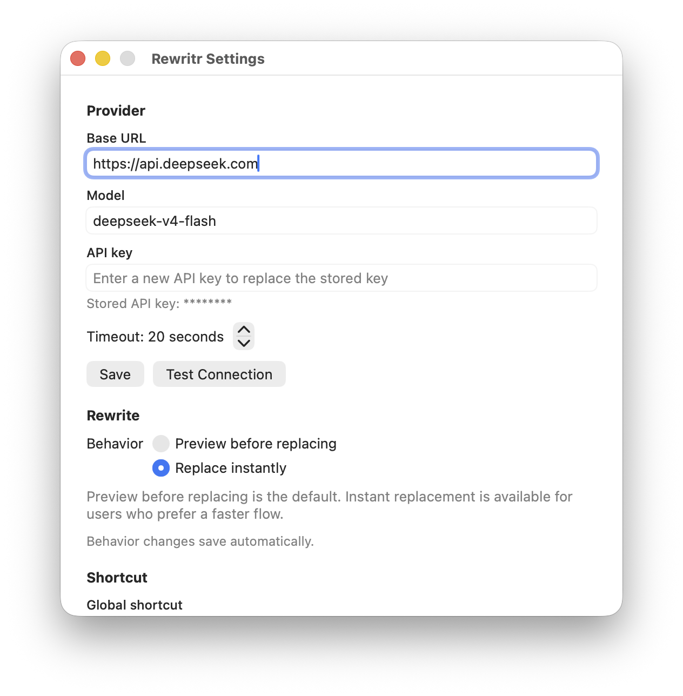
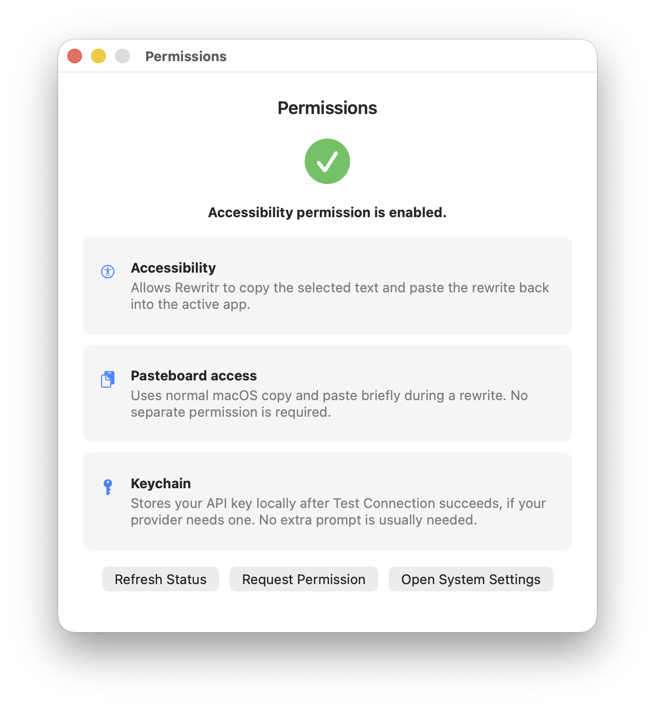
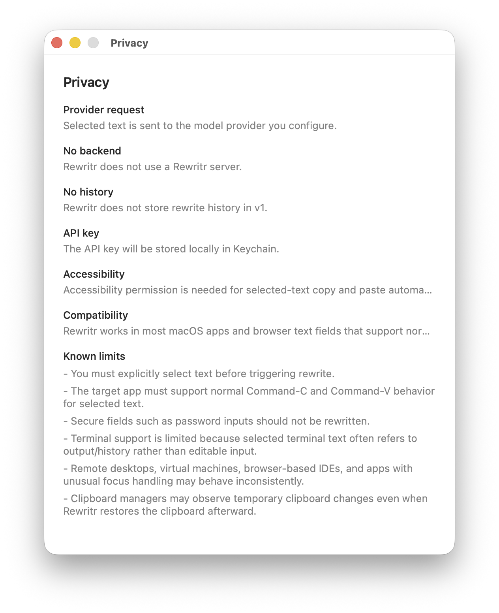

只送出選取的文字
App 只會把你明確選取的文字送到你設定的 provider endpoint。
原生 macOS 寫作助手
Rewritr 幫助非英語母語使用者 把選取的英文改寫得更順暢、 更自然、更接近母語表達， 就在你正在寫作的地方完成。
不需要 Rewritr 託管帳號。 不保存改寫歷史。不做分析統計。 使用你自己的 OpenAI-compatible provider， 也可以連接本機模型。
I want make this sentence more natural for daily work.
I want to make this sentence sound more natural for everyday work.
隱私優先
Rewritr 刻意保持小而清楚。它不執行後端服務，不收集分析資料， 不保存改寫歷史，也不要求你建立帳號。
App 只會把你明確選取的文字送到你設定的 provider endpoint。
可以使用 OpenAI-compatible 雲端 endpoint，也可以使用本機模型， 讓資料留在自己的機器或網路裡。
Provider key 保存在 Keychain。非敏感設定保存在本機 app 偏好設定中。
Rewritr 免費且開源，信任模型是可見的，而不是藏在託管寫作服務背後。
用途
Rewritr 面向已經知道自己想表達什麼、只是希望最終英文更順暢自然的人。
它不是文件編輯器、AI 內容生成器、學術寫作套件、瀏覽器擴充功能， 也不是訂閱制寫作帳號。
在你正在使用的 app 裡，選取想要改善的句子或段落。
使用 macOS 選單列 app 的全域快捷鍵。Rewritr 透過標準 macOS 自動化複製選取範圍。
你可以先檢查改寫結果，也可以在需要最快流程時直接替換。
設計上的不同
可用於支援標準複製貼上的普通 macOS app 和瀏覽器文字欄位。
沒有 Rewritr 登入、託管工作區、用量面板或服務端改寫歷史。
App 只專注一件事：用你控制的 provider 自然地改寫選取的英文。
預設改寫目標是清楚、接近母語的日常英文，而不是學術或論文式表達。
截圖
在一個地方設定完整的 OpenAI-compatible endpoint、模型、可選 API key、改寫模式和快捷鍵。



相容性
Rewritr 最適合支援標準選取範圍、⌘-C 和 ⌘-V 的 app 和瀏覽器輸入欄位。
安全輸入欄位、Terminal、遠端桌面、虛擬機、瀏覽器 IDE，以及焦點處理特殊的 app 可能受限。
免費且開源